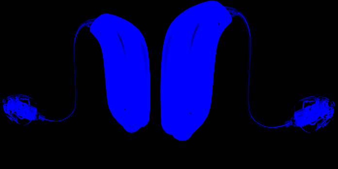
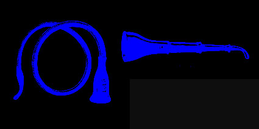
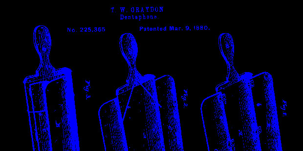
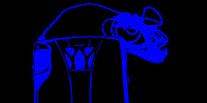
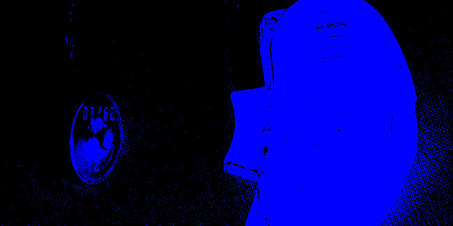
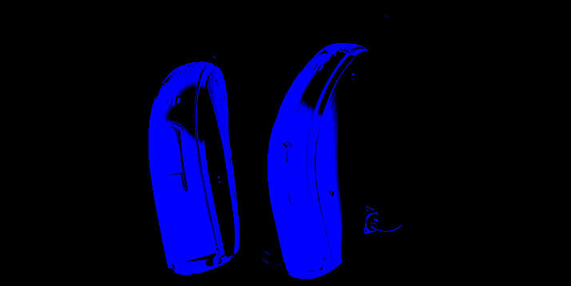

SON HISTOIRE AVANT 2019
Les avancées technologiques ont permis aux aides auditives de devenir de plus en plus performantes, discrètes et faciles d’utilisation. Avec l’accélération des innovations de ces dernières années, nul doute que les appareils auditifs continueront à s’améliorer afin d’apporter toujours plus de confort à l’utilisateur.
C’est quoi une aide auditive
Il s’agit, schématiquement, d’amplificateurs de sons miniaturisés, actuellement analogiques, qui appareillent les personnes malentendantes et dont la finalité est de faire vibrer les liquides de l’oreille interne afin de stimuler les cellules ciliées non détruites.
Quelle que soit la qualité de l’appareil, ce qui est détruit est détruit. L’atteinte concerne l’oreille interne c’est à dire l’organe sensoriel. On ne retrouvera donc jamais l’audition de ses vertes années.
DE QUOI SONT FAIT LES APPAREILS

Microphone
Sensiblement tous identiques, quelle que soit leur marque. Souvent équipés d’entrées multidirectionnelles, décalées dans l’espace, qui permettent de créer un effet spatial. Il capte les sons et les transforme en signaux électriques. Ces micros ont une bande passante limitée. Ils constituent donc le premier filtre dans la qualité de l’appareil.
Amplificateur
C’est un système d’amplification des sons et de traitement des sons. Le signal électrique recueilli par le microphone va être transformé par un convertisseur analogique digital en une série de chiffres. Ces valeurs binaires sont ensuite traitées par un algorithme mathématique et les chiffres sortant du microprocesseur sont différents de ceux présents à l’entrée. Ils sont ensuite retransformés en courant électrique grâce cette fois à un convertisseur digital analogique.
Ecouteur
Il est très petit dans la prothèse auditive, induisant des distorsions d’autant plus importante que l’amplification sera grande. Il transforme le signal électrique modifié et amplifié en onde sonore. Il constitue le deuxième maillon faible de la prothèse du fait de sa taille. Un walkman grand public offrira de meilleures performances du fait de la taille, plus grande, de l’écouteur.
Microphone et écouteur doivent être les plus éloignés possible dans l’appareil afin d’éviter l’effet Larsen.
SON HISTOIRE
Depuis toujours, l’Homme a tenté de résoudre ses problèmes d’audition. Grâce à l’invention de plusieurs appareils, la vie quotidienne des personnes souffrant de surdité n’a cessé de s’améliorer. les premiers objets d’aide auditive
bien avant la création d’un objet spécifique, l’homme avait pour habitude de porter sa main derrière l’oreille de manière à former un cornet pour augmenter son acuité auditive.
Dans l’Antiquité, les Grecs utilisent sans doute la coquille de mer comme appareil auditif. Au Moyen-Age, les cornes d’animaux sont à la fois des porte-voix et des cornets d’écoute pour les sourds.
DENTAPHONE

Conduction osseuse
Vers la fin du 19ème siècle, le dentaphone ou ostéophone est souvent préféré au cornet acoustique. Cet embryon de l’audioprothèse est composé d’une membrane fixée au bout d’une tige dont l’autre extrémité est tenue entre les dents. Les sons étaient ainsi transmis à l’oreille interne par conduction osseuse. On pense que ce procédé était déjà connu des Grecs 200 ans avant J.-C. Dans un autre genre, le fauteuil auditif, élaboré en 1841, est muni de deux oreilles sur chaque accoudoir qui captent les sons et de deux tubes d’air comprimé qui amplifient les sons.
CARBONE

Booster
Hutchison trouve le principe d’amplification électrique lui permettant de fabriquer la première prothèse électrique au carbone. La légende raconte qu’il aurait également inventé le klaxon de voiture pour rendre les gens sourds et ainsi vendre davantage d’appareils. Cette aide auditive révolutionnaire permet d’améliorer l’écoute de 10 à 15 dB à ses débuts. Par la suite, l’appareil auditif au carbone amplifie le son jusqu’à 40 dB grâce à un booster. Cependant, les bruits de fonds sont élevés et la qualité du rendu sonore est médiocre.
L’APPAREIL A LAMPE
En 1920 la prothèse auditive à lampe, n’amplifie le son que d’environ 25dB, elle offre une meilleure qualité de reproduction que l’appareil auditif au carbone.
Il faut attendre les années 40 avant que l’aide auditive à lampe concurrence vraiment celle de carbone. En 1944, il y avait encore environ 50 000 appareils au carbone aux USA car ils étaient plus discrets à porter. L’arrivée des prothèses auditives à transistor fera disparaître le modèle à lampe en 1952.
LE PREMIER SONOTONE

1929, le premier sonotone.
Les années 30 marquent quant à elles l’arrivée du fameux sonotone, créé par l’entreprise du même nom. Les premiers sonotones se branchent sur de grosses batteries et fonctionnent à l’aide d’une lampe radio. Basée à New York, la société Sonotone est l’acteur majeur de la conception, du développement et de la commercialisation des aides auditives tout au long du 20ème siècle, et ce jusqu’à sa fermeture définitive en 2005. Sonotone, le premier vrai fabricant d’aides auditives.
Commercialise
En 1929, l’entreprise new-yorkaise Sonotone commercialise le premier appareil électronique capable d’amplifier le son. Disparu en 2005, Sonotone a longtemps été l’acteur principal sur le marché de l’aide auditive, ainsi, avec l’usage, le nom propre est devenu nom commun. Mais en réalité, l’amplificateur d’écoute existait bien avant le sonotone.
AMPLIFICATEUR
Cornets acoustiques
Les premiers amplificateurs d’écoute, appelés tubes ou cornets acoustiques étaient fabriqués en cuivre. Leur système purement mécanique, inspiré du téléphone de Graham Belle breveté en 1876, les rendait très imposants et lourds. Ils pouvaient tout de même amplifier le son jusqu’à 100 décibels.
Cependant, c’est bien l’entreprise Sonotone qui fut à l’origine des premiers développements des aides auditives et qui marquera son histoire contemporaine.
Transistor
En 1929, le premier sonotone marche grâce à la technologie de la lampe radio et tire son énergie d’énormes batteries. Au fil des ans et grâce à l’invention du transistor, le sonotone rétrécie et devient davantage portatif. Bien qu’il soit encore trop gros pour se faire discret dans une poche, il peut être disposé dans un sac et transmet alors le son aux oreilles de son porteur via un écouteur, bien plus discret. C’est dans les années 60 que l’appareil auditif tel que nous le connaissons aujourd’hui apparait le Sonotone 333 BTE est la première audioprothèse à contour d’oreille.
Intra-auriculaires
Milieu du 20ème siècle, la prothèse auditive à transistor aux aides intra-auriculaires.
En 1947, les laboratoires Bell Téléphone mettent au point la prothèse auditive à transistor. Il s’agit d’un petit composant électronique permettant de moduler et d’amplifier un signal électrique.
L’un des principaux avantages de ce système est sa portabilité, beaucoup plus petit que le modèle à lampe, il permet à l’appareil auditif de se placer directement à l’oreille. De plus, il est moins demandeur en énergie que son prédécesseur, donc plus économique.
APPAREIL PROGRAMMABLE

La prothèse programmable analogique
Fin des années 1980, la prothèse auditive analogique programmable permet de mieux gérer le son. Elle offre la possibilité de régler l’intensité des fréquences plutôt dans les basses ou dans les aiguës et d’ajuster le volume global. Elle adoucit automatiquement les bruits forts et amplifie les sons faibles.
La prothèse programmable numérique
En 1996 la première prothèse auditive tout numérique Senso de la marque Widex est le premier appareil auditif entièrement numérique à être commercialisé. Contrairement au système analogique qui traduit le son en signaux électriques, le numérique le convertit en nombres. Ces appareils sont capables d’effectuer des millions de calculs à la seconde, analysant en temps réel l’environnement et adaptant ainsi le son selon une multitude d’éléments extérieurs.
Leur utilisation est également plus simple. L’audioprothèse numérique est en fait un micro-ordinateur porté sur ou dans l’oreille.
CONNECTION

Les années 2000, des prothèses auditives connectées
aujourd’hui, toutes les audioprothèses utilisent la technologie numérique, qu’il s’agisse d’un contour d’oreille, d’un intra-auriculaire ou encore d’un open-fit. Dotées d’un microprocesseur, elles analysent les sons plusieurs milliers de fois par seconde, permettant un ajustement automatique du bruit.
Sans-fil
Les connexions sans-fil, comme le Bluetooth et la Wifi, offrent une multitude de possibilités simplifiant la vie des utilisateurs et se retrouvent aujourd’hui dans la plupart des prothèses auditives. On peut rapidement modifier les paramètres de l’appareil à l’aide d’une petite télécommande ou même grâce à une application installée sur son smartphone.
Les avancées technologiques ont permis aux aides auditives de devenir de plus en plus performantes, discrètes et faciles d’utilisation. Avec l’accélération des innovations de ces dernières années, nul doute que les appareils auditifs continueront à s’améliorer afin d’apporter toujours plus de confort à l’utilisateur.